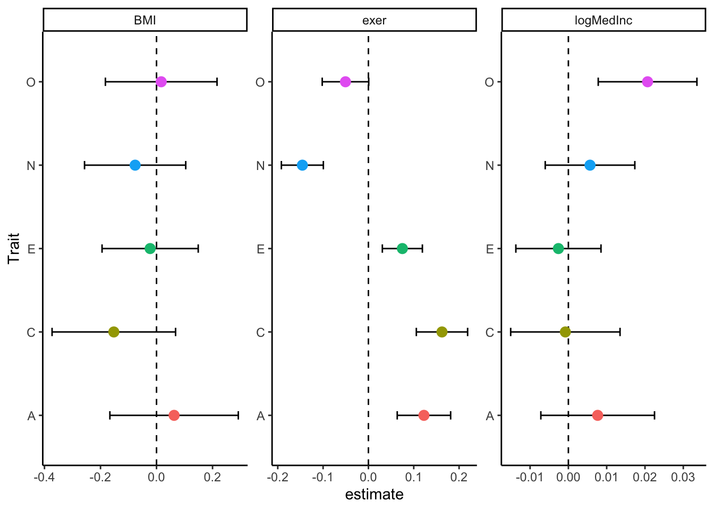
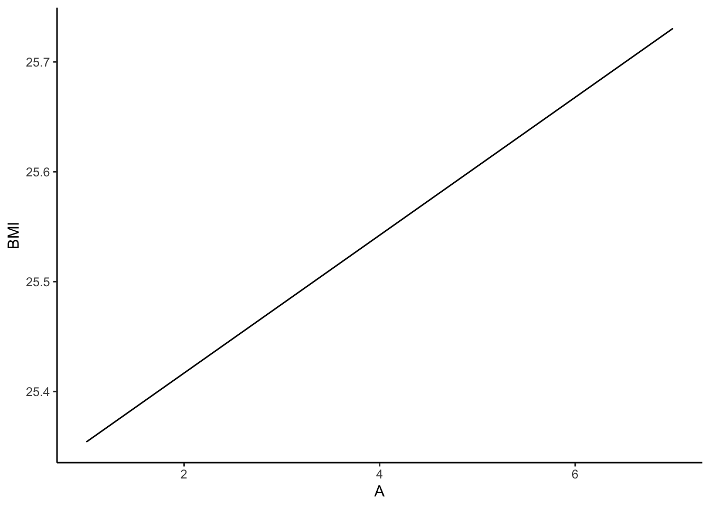
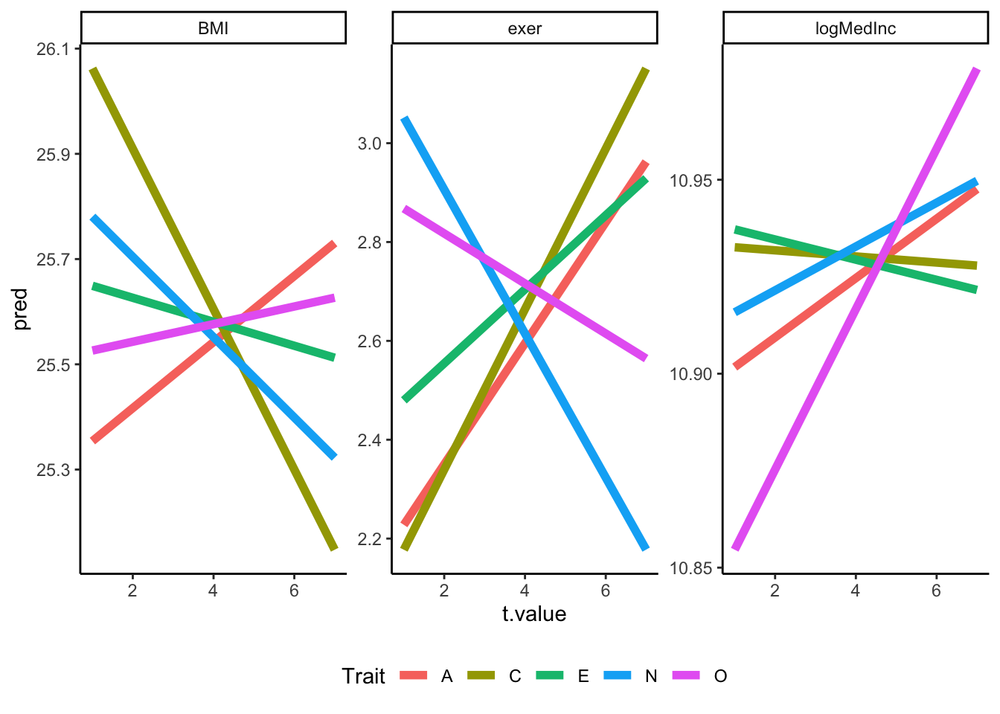

library(psych)
library(knitr)
library(kableExtra)
library(gridExtra)
library(plyr)
library(tidyverse)Intro to purrr
Download .Rmd (won’t work in Safari or IE)
See GitHub Repository
#purrr In my opinion, purrr is one of the most underrated and under-utilized R packages.
#Background: iteration Iteration is everywhere. It underpins much of mathematics and statistics. If you’ve ever seen the \(\Sigma\) symbol, then you’ve seen (and probably used) iteration.
It’s also incredibly useful. Anytime you have to repeat some sort of action many times, iteration is your best friend. In psychology, this often means reading in a bunch of individual data files from an experiment, repeating an analysis with a series of different predictors or outcomes, or creating a series of figures.
Enter for loops. for loops are the “OG” form of iteration in computer science. The basic syntax is below. Basically, we can use a for loop to loop through and print a series of things.
for(i in letters[1:5]){
print(i)
}[1] "a"
[1] "b"
[1] "c"
[1] "d"
[1] "e"In psychology, we deal with all sorts of weird sorts of data frames. From longitudinal data with separate files for each year to experimental data with separate data for each participant (if you’re “lucky,” you might even get both!), data are often stored as separate files. THe good news is that for loops are here to save you from:
- Writing code to load in each file separately (not good).
- Copying each data file into one larger data set in Excel (worse)
Assuming you have all the data in a single folder and the format is reasonably similar, you have the following basic syntax:
data_path <- ""
files <- list.files(data_path)
data <- list()
for(i in files){
data[[i]] <- read.csv(i, stringsAsFactors = F)
}
data <- combine(data)The loop above defines the path of the data, reads all the files in that path, creates an empty list to store the data files, loops through each of the files individually and saves them into the list, and combines each of the read data files into a single data frame.
This is all well and good and would work just fine. But what happens if you have multiple data files for different subjects if, say, they complete a writing task and a memory task? Or maybe you work with longitudinal data, like I do, and frequently have multiple data files for a given year for different categories (e.g. health, psychological, etc.). In that case, the loop above might not work. The files might have different properties or be stored in different locations (for your own sanity).
data_path <- ""
directories <- list.files(data_path)
files <- c("health", "person")
data <- data.frame
for(i in directories){
for(k in files){
tmp <- read.csv(sprintf("%s/%s/%s.csv", data_path, i, k), stringsAsFactors = F)
tmp$file <- k
data <- bind_rows(data, tmp)
}
}In this case, it’s a little more complicated. First, our method for loading each of the files into a list doesn’t work nicely here because we are iterating through 2 variables. As a result, we have to save each file into an object called “tmp” that then must be joined with data from previous iterations. The downside of this is that we have to use a sort of “brute-force” method to do so, which is not ideal. Things go wrong with data collection quite often, meaning that files are likely to have different columns. Third, when a loop fails, it refuses to continue. And you are left with a couple of variables (i and k) and have to try to work backward to figure out what is going wrong.
Sound annoying? Enter purrr.
#The purrr solution purrr is my favorite alternative to iteration. (There’s also the whole apply family, which is definitely worth learning – even I still use it – but I find purrr to be much more useful in the long run.) purrr keeps me organized by keeping everything together in a single object. It works nicely with functions like possibly() and safely() that catch and handle errors.
purrr can be used for many more things than I will talk about here. If you want to know more, you can check out Hadley Wickham’s R for Data Science or purrr documentation. I’m going to focus on how I I use purrr: reading data, cleaning, running models, making tables, and making plots.
Here’s some purrr syntax I won’t explain now. It’s set up to mirror the demonstration above. It will make way more sense soon, I promise:
read_fun <- function(pid, dir){
sprintf("%s/%s/%s.csv", data_path, dir, pid) %>% read_csv
}
data_path <- ""
file <- list.files(data_path)
data <- tibble(file = file) %>%
mutate(file = str_remove_all(file, ".csv")) %>%
separate(file, c("PID", "directory"), sep = "_") %>%
mutate(data = map2_df(PID, directory, read_fun)) %>%
unnest(data, .drop = T)Beyond “WTF”, your initial response may be “this is not more efficient than the nested for loop you showed us above.” You are partially correct. The rest of the tutorial will be showing you why being wrong now will sooooo right later!
Nested Data Frames
Before we can learn how to use purrr, we need to understand what a nested data frame is. If you’ve ever worked with a list in R, you are halfway there. Basically a nested data frame takes the normal data frame you are probably familiar with and adds some new features. It still has columns, rows, and cells, but what makes up those cells isn’t restrictred to numbers, strings, or logicals. Instead, you can put essentially anything you want: lists, models, data frames, plots, etc!
If that freaks you out a bit, imagine this. Imagine you are me: you work with personality data and want to use each of the Big 5 to individually predict some outcomes, like health and life satisfaction.
ipip50 <- read.csv(url("https://media.githubusercontent.com/media/emoriebeck/R-tutorials/master/05_purrr/ipip50_sample.csv"), stringsAsFactors = F)
# let's recode the exercise variable (exer)
# 0 = "veryRarelyNever"; 1 = "less1mo"; 2 = "less1wk"; 3 = "1or2wk"; 4 = "3or5wk"; 5 = "more5wk"
ipip50 <- ipip50 %>%
mutate(exer = mapvalues(exer, unique(exer), c(3,4,0,5,2,1)))The really bad solution would be to write the code to model these data, make a table of the results, and make a plot. Then you would copy and paste that code 9 times to do the same steps for the other trait-outcome pairs, changing the key variables. Sometime later, you could run those individually.
A better solution would be a loop, where you use a nested loop to complete the steps for each trait-outcome pair. How you store these values can be a little wonky and often involes a bunch of different lists or a cluttered global environment with losts of objects.
But the best solution is purrr. What does this look like? Well, we start with a nested data frame. To do that, we need to make sure our data is ready. I’ve found that the easiest way to work with data with purrr is to first convert your data to long form, where we want to have columns for all the variable we would want to iterate through in a loop. To help you understand what that means and looks like, I think it’s useful to start with a non-nested data frame created by the crossing() function from the dplyr package.
Basically, crossing() takes what you give it and returns a data frame with all combinations of the variables. There is no limit to the number of columns this can have. Here, we feed it “Trait”, which contains a vector of the Big 5, and “Outcome”, which contains a vector of our outcomes, which results in a data frame with 2 columns and 10 rows.
(df <- expand.grid(
Trait = c("E", "A", "C", "N", "O"),
Outcome = c("BMI", "logMedInc", "exer")
)) Trait Outcome
1 E BMI
2 A BMI
3 C BMI
4 N BMI
5 O BMI
6 E logMedInc
7 A logMedInc
8 C logMedInc
9 N logMedInc
10 O logMedInc
11 E exer
12 A exer
13 C exer
14 N exer
15 O exerOne cool thing this will allow us to do is to use consistent variable names in formulas and functions and to feed the correct data into different programs using the dplyr helper function filter(). You can use expand grid with purrr functions without nesting any data in the data frame (in fact, I do this a lot because I work with large data sets and lots of combinations), but I’m going to show you the nested data frame route in this case and refer you to my GitHub for when and how you would use the crossing() approach.
Back to nested data frames. We want to end up with a data frame that has the same columns as the crossing() data frame except that we want an additional column that holds the data for each trait-outcome pair. To do this, we need to have a column that indexes both trait and outcome. To get this, we change our data to the “tidy” format using gather() in the tidyr package.
So let’s take our Big 5 data and do that.
# Let's make the trait data long and create composites
(ipip50_composites <- ipip50 %>%
gather(key = item, value = value, A_1:O_10) %>%
separate(item, c("Trait", "item"), sep = "_") %>%
group_by(RID, gender, age, BMI, exer, logMedInc, Trait) %>%
summarise(t.value = mean(value, na.rm = T)))# A tibble: 5,000 × 8
# Groups: RID, gender, age, BMI, exer, logMedInc [1,000]
RID gender age BMI exer logMedInc Trait t.value
<int> <chr> <int> <dbl> <chr> <dbl> <chr> <dbl>
1 3078429 female 27 28.0 3 10.7 A 5.41
2 3078429 female 27 28.0 3 10.7 C 4.77
3 3078429 female 27 28.0 3 10.7 E 6.03
4 3078429 female 27 28.0 3 10.7 N 5.65
5 3078429 female 27 28.0 3 10.7 O 4.01
6 4310942 female 35 28.4 4 10.7 A 4.63
7 4310942 female 35 28.4 4 10.7 C 4.77
8 4310942 female 35 28.4 4 10.7 E 5.00
9 4310942 female 35 28.4 4 10.7 N 3.11
10 4310942 female 35 28.4 4 10.7 O 6.78
# … with 4,990 more rows# Now let's make the outcomes long
ipip50_composites <- ipip50_composites %>%
gather(key = Outcome, value = o.value, BMI:logMedInc) Now that our data is in long format, we have a couple of options. The first is to use the nest() function from the tidyr package to chunk our data by trait and outcome. This will result in a data frame with 3 columns: 1 that indexes the Trait, one that indexes the Outcome, and one that indexes the data for that trait and outcome combination.
(ipip50_nested <- ipip50_composites %>%
group_by(Trait, Outcome) %>%
nest() %>%
ungroup())# A tibble: 15 × 3
Trait Outcome data
<chr> <chr> <list>
1 A BMI <tibble [1,000 × 5]>
2 C BMI <tibble [1,000 × 5]>
3 E BMI <tibble [1,000 × 5]>
4 N BMI <tibble [1,000 × 5]>
5 O BMI <tibble [1,000 × 5]>
6 A exer <tibble [1,000 × 5]>
7 C exer <tibble [1,000 × 5]>
8 E exer <tibble [1,000 × 5]>
9 N exer <tibble [1,000 × 5]>
10 O exer <tibble [1,000 × 5]>
11 A logMedInc <tibble [1,000 × 5]>
12 C logMedInc <tibble [1,000 × 5]>
13 E logMedInc <tibble [1,000 × 5]>
14 N logMedInc <tibble [1,000 × 5]>
15 O logMedInc <tibble [1,000 × 5]>Basically, instead of the cells in the “data” column being a single numeric, logical, or character value, each cell is a data frame! Note that the class of the “data” column is a list (hence the name “list column”) and the class of each cell is a tibble. o_O Pretty cool, huh? Here’s why: by putting a data frame of the data for each trait / outcome combination in a single cell, we can operate on each cell like we would a cell in a normal data frame. Sort of.
The map() Functions
I say sort of because we need another function, this time from the purrr package (yay!) called map(). Now my purpose here isn’t to go through every possible way you can use this. If you want to learn more of the ins and outs see http://r4ds.had.co.nz/many-models.html. My goal is to show you how I, a psychology grad student, uses purrr every. single. day. in my research.
What we want to do is to run a model using personality to predict our outcomes for each combination of trait and outcome. Now that we have a data frame for each nested in a data frame, we’re ready to do that. Here’s how.
map()
start_time <- Sys.time()
(ipip50_nested <- ipip50_nested %>%
mutate(model = map(data, ~lm(o.value ~ t.value, data = .))))# A tibble: 15 × 4
Trait Outcome data model
<chr> <chr> <list> <list>
1 A BMI <tibble [1,000 × 5]> <lm>
2 C BMI <tibble [1,000 × 5]> <lm>
3 E BMI <tibble [1,000 × 5]> <lm>
4 N BMI <tibble [1,000 × 5]> <lm>
5 O BMI <tibble [1,000 × 5]> <lm>
6 A exer <tibble [1,000 × 5]> <lm>
7 C exer <tibble [1,000 × 5]> <lm>
8 E exer <tibble [1,000 × 5]> <lm>
9 N exer <tibble [1,000 × 5]> <lm>
10 O exer <tibble [1,000 × 5]> <lm>
11 A logMedInc <tibble [1,000 × 5]> <lm>
12 C logMedInc <tibble [1,000 × 5]> <lm>
13 E logMedInc <tibble [1,000 × 5]> <lm>
14 N logMedInc <tibble [1,000 × 5]> <lm>
15 O logMedInc <tibble [1,000 × 5]> <lm> end_time <- Sys.time()
print(end_time - start_time)Time difference of 0.09020615 secsWhat’s going on there? Well, we’re using mutate() from dplyr to create a new column in our data frame called “model.” Then, we use the map() function to tell it that we want to take each of the cells in the “data” column and run a linear model predicting our outcomes (o.value) from personality (t.value). The “data = .” part follows because we are within a dplyr pipe.
As you can see, this results in a new column called “model.” As with the data column, the class of the “model” column is a list, and the class of any individual cell in the column is the S3 class “lm”, which just means linear model.
Now, this is definitely a fast way to run a lot of models, but thus far, this isn’t better than a for loop. But our nested data frame can way outperform a for loop. We don’t run models just for the sake of doing so. We want to extract the information and report it, often in either a table or figure. With map() and purrr, we can create a table and figure for each model and store it in our data frame. No more dealing with clunky lists whose contents is hard to access or seemingly infinite numbers of objects cluttering your environment. It’s all stored in ONE DATA FRAME. (Sorry to shout, but I think the advantages of this cannot be overstated.)
Watch:
(ipip50_nested <- ipip50_nested %>%
mutate(tidy = map(model, broom::tidy)))# A tibble: 15 × 5
Trait Outcome data model tidy
<chr> <chr> <list> <list> <list>
1 A BMI <tibble [1,000 × 5]> <lm> <tibble [2 × 5]>
2 C BMI <tibble [1,000 × 5]> <lm> <tibble [2 × 5]>
3 E BMI <tibble [1,000 × 5]> <lm> <tibble [2 × 5]>
4 N BMI <tibble [1,000 × 5]> <lm> <tibble [2 × 5]>
5 O BMI <tibble [1,000 × 5]> <lm> <tibble [2 × 5]>
6 A exer <tibble [1,000 × 5]> <lm> <tibble [2 × 5]>
7 C exer <tibble [1,000 × 5]> <lm> <tibble [2 × 5]>
8 E exer <tibble [1,000 × 5]> <lm> <tibble [2 × 5]>
9 N exer <tibble [1,000 × 5]> <lm> <tibble [2 × 5]>
10 O exer <tibble [1,000 × 5]> <lm> <tibble [2 × 5]>
11 A logMedInc <tibble [1,000 × 5]> <lm> <tibble [2 × 5]>
12 C logMedInc <tibble [1,000 × 5]> <lm> <tibble [2 × 5]>
13 E logMedInc <tibble [1,000 × 5]> <lm> <tibble [2 × 5]>
14 N logMedInc <tibble [1,000 × 5]> <lm> <tibble [2 × 5]>
15 O logMedInc <tibble [1,000 × 5]> <lm> <tibble [2 × 5]>plyr alternative
To be fair, there are other alternative, like dlply() in the plyr package. I’ll demonstrate it below then make a case for why not to do this.
So if we start by taking our long format data frame, we can use a very similar format to map to create a list of models.
models <- dlply(ipip50_composites, .(Trait, Outcome), function(x) lm(o.value ~ t.value, data = x))Then we could again use tidy() from broom to get summaries.
tidies <- llply(models, broom::tidy)And then use combine() from dplyr to merge them. BUT, we have a problem. (1) We have a weird, nested list, and (2) combine() doesn’t index our grouping variables like our nested data frame + map().
The for Loop Alternative
Okay, but we can do this with a for loop, so why not? My rationale is that it makes my brain hurt to write a loop that is half as functional the purrr solution. Watch:
Traits <- c("E", "A", "C", "N", "O")
Outcomes <- c(c("BMI", "logMedInc", "exer"))
ipip50_loop <- list()
counter <- 1
start_time <- Sys.time()
for (trait in Traits){
for (outcome in Outcomes){
df <- ipip50_composites %>%
filter(Trait == trait & Outcome == outcome)
tmp <- tibble(Trait = trait, Outcome = outcome)
tmp$model <- list(lm(o.value ~ t.value, data = df))
ipip50_loop[[counter]] <- tmp
counter <- counter + 1
}
}
end_time <- Sys.time()
print(end_time - start_time)Time difference of 0.4015951 secsThis took a lot more lines of code and also took longer. For a few models with a small data set, this doesn’t matter much. But when you work with hundreds of models with 10’s or 100’s of thousands of observations, this adds up.
So the lesson here is just use purrr. Please.
Unnesting
Using the tidy() function from the broom package, we now have another column. Again, the column’s class is “list” but the cell’s class is “data.frame”. How can we use this? Well, the nest() function we used earlier has a sibling called unnest(). It does the opposite of nest(); it takes our list columns and expands it. So, since we have 2 x 5 data frame in each cell of the “tidy” column, when we unnest it, there will be rows for each Trait and outcome combination (where there was only 1 in the nested data frame). This will make more sense with a demonstration:
ipip50_nested %>%
select(Trait, Outcome, tidy) %>%
unnest(tidy)# A tibble: 30 × 7
Trait Outcome term estimate std.error statistic p.value
<chr> <chr> <chr> <dbl> <dbl> <dbl> <dbl>
1 A BMI (Intercept) 25.3 1.10 23.0 2.11e- 94
2 A BMI t.value 0.0627 0.229 0.274 7.84e- 1
3 C BMI (Intercept) 26.2 0.928 28.3 1.54e-129
4 C BMI t.value -0.152 0.220 -0.691 4.89e- 1
5 E BMI (Intercept) 25.7 0.667 38.5 1.34e-199
6 E BMI t.value -0.0228 0.172 -0.133 8.94e- 1
7 N BMI (Intercept) 25.9 0.667 38.8 2.28e-201
8 N BMI t.value -0.0763 0.181 -0.423 6.73e- 1
9 O BMI (Intercept) 25.5 0.947 26.9 1.55e-120
10 O BMI t.value 0.0167 0.199 0.0840 9.33e- 1
# … with 20 more rowsPretty neat, huh? From here, we may want to do a bunch of different things. And purrr is our friend for all of them. I’m going to do a few below, just to show you your options.
Create a Table
When we have multiple predictors and outcomes, we typically want to smash all this info into a single table, with predictors as different rows of the table and outcomes as different columns (or vice versa). We typically include both an estimate and a confidence interval or standard error for each term in the model (in our case Intercept and t.value).
Let’s create a table with different columns for each of the outcomes, and different rows for each trait:
(tab <- ipip50_nested %>%
select(Trait, Outcome, tidy) %>%
unnest(tidy) %>%
select(Trait:std.error) %>%
rename(b = estimate, SE = std.error) %>%
gather(key = tmp, value = value, b, SE) %>%
unite(tmp, Outcome, tmp, sep = ".") %>%
spread(key = tmp, value = value))# A tibble: 10 × 8
Trait term BMI.b BMI.SE exer.b exer.SE logMedInc.b logMedInc.SE
<chr> <chr> <dbl> <dbl> <dbl> <dbl> <dbl> <dbl>
1 A (Intercept) 25.3 1.10 2.11 0.282 10.9 0.0711
2 A t.value 0.0627 0.229 0.122 0.0589 0.00765 0.0148
3 C (Intercept) 26.2 0.928 2.02 0.238 10.9 0.0601
4 C t.value -0.152 0.220 0.162 0.0566 -0.000788 0.0143
5 E (Intercept) 25.7 0.667 2.40 0.171 10.9 0.0431
6 E t.value -0.0228 0.172 0.0749 0.0442 -0.00260 0.0111
7 N (Intercept) 25.9 0.667 3.20 0.171 10.9 0.0432
8 N t.value -0.0763 0.181 -0.146 0.0463 0.00565 0.0117
9 O (Intercept) 25.5 0.947 2.92 0.244 10.8 0.0612
10 O t.value 0.0167 0.199 -0.0506 0.0513 0.0207 0.0129We aren’t quite done yet. This table would never make it in a publication. Enter kable() + kableExtra.
tab %>% select(-Trait) %>%
kable(., "html", booktabs = T, escape = F, digits = 2,
col.names = c("Term", rep(c("b", "SE"), times = 3))) %>%
kable_styling(full_width = F) %>%
column_spec(2:7, width = "2cm") %>%
kableExtra::group_rows("Agreeableness",1,2) %>%
kableExtra::group_rows("Conscientiousness",3,4) %>%
kableExtra::group_rows("Extraversion",5,6) %>%
kableExtra::group_rows("Neuroticism",7,8) %>%
kableExtra::group_rows("Openness",9,10) %>%
add_header_above(c(" " = 1, "BMI" = 2, "Exercise" = 2, "Log Median Income" = 2))| Term | b | SE | b | SE | b | SE |
|---|---|---|---|---|---|---|
| Agreeableness | ||||||
| (Intercept) | 25.29 | 1.10 | 2.11 | 0.28 | 10.89 | 0.07 |
| t.value | 0.06 | 0.23 | 0.12 | 0.06 | 0.01 | 0.01 |
| Conscientiousness | ||||||
| (Intercept) | 26.21 | 0.93 | 2.02 | 0.24 | 10.93 | 0.06 |
| t.value | -0.15 | 0.22 | 0.16 | 0.06 | 0.00 | 0.01 |
| Extraversion | ||||||
| (Intercept) | 25.67 | 0.67 | 2.40 | 0.17 | 10.94 | 0.04 |
| t.value | -0.02 | 0.17 | 0.07 | 0.04 | 0.00 | 0.01 |
| Neuroticism | ||||||
| (Intercept) | 25.86 | 0.67 | 3.20 | 0.17 | 10.91 | 0.04 |
| t.value | -0.08 | 0.18 | -0.15 | 0.05 | 0.01 | 0.01 |
| Openness | ||||||
| (Intercept) | 25.51 | 0.95 | 2.92 | 0.24 | 10.83 | 0.06 |
| t.value | 0.02 | 0.20 | -0.05 | 0.05 | 0.02 | 0.01 |
Now I would usually get fancy and bold or flag significant values. I would also use confidence intervals rather than standard errors and add some additional rows with some model summary terms (e.g. \(R^2\)). If you want to see that, I’ll refer you to my github.
Plots
One Big Plot
Sometimes, we want one big plot that shows all our results. What kind of plot? You have choice. Line graphs are popular, but they are perhaps overly simple for these simple linear relationships. We’d also have to go back and get predicted values, which is helpful, but again I’ll refer you to my github for more on that. Instead, we’re going to create a forest plot, which is useful for determining which terms are different than 0 and how those relate to other terms. We can do this for both our model terms (Intercept and t.value), but I’m going to restrict us to t.value, which tells us how a 1 point increase in a personality characteristic is associated with an outcome.
ipip50_nested %>%
select(Trait, Outcome, tidy) %>%
unnest(tidy) %>%
filter(term == "t.value") %>%
ggplot(aes(x = Trait, y = estimate)) +
geom_hline(aes(yintercept = 0), linetype = "dashed") +
geom_errorbar(aes(ymin = estimate - std.error, ymax = estimate + std.error),
width = .1) +
geom_point(aes(color = Trait), size = 3) +
coord_flip() +
facet_wrap(~Outcome, scale = "free") +
theme_classic() +
theme(legend.position = "none")
Pretty cool. We see that personality predicts exercise pretty much across the board, but that it does not predict BMI. Only Openness predicts log Median Income.
But here’s where we pat ourselves on the back. We got from nesting our data to the plot above in FIFTEEN LINES OF CODE. Without purrr, it would take us that many lines just to run our models. Then we’d still need to tidy them, join them back together, and plot. I don’t want to do that. Or we could use a loop, and create a weird series of lists or a cluttered environment. No thank you on all accounts.
Predicted Values
But you will encounter times when you want to do predicted values. There are a number of ways to go about this (and both of these ignore that you can just use geom_smooth() in the ggplot2 package with method = “lm” for simple linear models). I’m going to show you 2 purrrfect ways. Because demonstrations.
Single Plots
First, let’s get predicted values for each model. We’ll use expand.grid() to get the full range of values for each personality traits (1 to 7) and then use the predict() function to get the predicted values, setting the “newdata” argument to the newly created range of personality values.
To do this, I’m also going to introduce something that is central to purrr programming: local functions. As a general rule, if you ever have to do something multiple times, write a function. Save yourself. Please. When writing functions for purrr, the basic mindframe I use is to make the inputs of the data frame either the “data” column of the nested data frame or the individual columns of interest. So in the function below, I want to get predicted values, so I take a model object as input and output a data frame of predicted values.
pred_fun <- function(mod){
crossing(
t.value = seq(1,7,.25)
) %>%
mutate(pred = predict(mod, newdata = .))
}
(ipip50_nested <- ipip50_nested %>%
mutate(pred = map(model, pred_fun)))# A tibble: 15 × 6
Trait Outcome data model tidy pred
<chr> <chr> <list> <list> <list> <list>
1 A BMI <tibble [1,000 × 5]> <lm> <tibble [2 × 5]> <tibble>
2 C BMI <tibble [1,000 × 5]> <lm> <tibble [2 × 5]> <tibble>
3 E BMI <tibble [1,000 × 5]> <lm> <tibble [2 × 5]> <tibble>
4 N BMI <tibble [1,000 × 5]> <lm> <tibble [2 × 5]> <tibble>
5 O BMI <tibble [1,000 × 5]> <lm> <tibble [2 × 5]> <tibble>
6 A exer <tibble [1,000 × 5]> <lm> <tibble [2 × 5]> <tibble>
7 C exer <tibble [1,000 × 5]> <lm> <tibble [2 × 5]> <tibble>
8 E exer <tibble [1,000 × 5]> <lm> <tibble [2 × 5]> <tibble>
9 N exer <tibble [1,000 × 5]> <lm> <tibble [2 × 5]> <tibble>
10 O exer <tibble [1,000 × 5]> <lm> <tibble [2 × 5]> <tibble>
11 A logMedInc <tibble [1,000 × 5]> <lm> <tibble [2 × 5]> <tibble>
12 C logMedInc <tibble [1,000 × 5]> <lm> <tibble [2 × 5]> <tibble>
13 E logMedInc <tibble [1,000 × 5]> <lm> <tibble [2 × 5]> <tibble>
14 N logMedInc <tibble [1,000 × 5]> <lm> <tibble [2 × 5]> <tibble>
15 O logMedInc <tibble [1,000 × 5]> <lm> <tibble [2 × 5]> <tibble>Now, let’s take those predicted values and use them to make individual plots.
plot_fun <- function(df, trait, outcome){
df %>%
ggplot(aes(x = t.value, y = pred)) +
geom_line() +
labs(x = trait, y = outcome) +
theme_classic()
}
(ipip50_nested <- ipip50_nested %>%
mutate(plot = pmap(list(pred, Trait, Outcome), plot_fun)))# A tibble: 15 × 7
Trait Outcome data model tidy pred plot
<chr> <chr> <list> <list> <list> <list> <list>
1 A BMI <tibble [1,000 × 5]> <lm> <tibble [2 × 5]> <tibble> <gg>
2 C BMI <tibble [1,000 × 5]> <lm> <tibble [2 × 5]> <tibble> <gg>
3 E BMI <tibble [1,000 × 5]> <lm> <tibble [2 × 5]> <tibble> <gg>
4 N BMI <tibble [1,000 × 5]> <lm> <tibble [2 × 5]> <tibble> <gg>
5 O BMI <tibble [1,000 × 5]> <lm> <tibble [2 × 5]> <tibble> <gg>
6 A exer <tibble [1,000 × 5]> <lm> <tibble [2 × 5]> <tibble> <gg>
7 C exer <tibble [1,000 × 5]> <lm> <tibble [2 × 5]> <tibble> <gg>
8 E exer <tibble [1,000 × 5]> <lm> <tibble [2 × 5]> <tibble> <gg>
9 N exer <tibble [1,000 × 5]> <lm> <tibble [2 × 5]> <tibble> <gg>
10 O exer <tibble [1,000 × 5]> <lm> <tibble [2 × 5]> <tibble> <gg>
11 A logMedInc <tibble [1,000 × 5]> <lm> <tibble [2 × 5]> <tibble> <gg>
12 C logMedInc <tibble [1,000 × 5]> <lm> <tibble [2 × 5]> <tibble> <gg>
13 E logMedInc <tibble [1,000 × 5]> <lm> <tibble [2 × 5]> <tibble> <gg>
14 N logMedInc <tibble [1,000 × 5]> <lm> <tibble [2 × 5]> <tibble> <gg>
15 O logMedInc <tibble [1,000 × 5]> <lm> <tibble [2 × 5]> <tibble> <gg> Let’s take a look at how this plot actually looks:
ipip50_nested$plot[[1]]
Meh, not a fan. Let’s do better and combine prediction lines across traits within outcomes. We’ll do this two ways: (1) separately for each outcome and (2) using facets across all outcomes.
ipip50_nested %>%
unnest(pred) %>%
ggplot(aes(x = t.value, y = pred, color = Trait)) +
geom_line(size = 2) +
facet_wrap(~Outcome, scale = "free") +
theme_classic() +
theme(legend.position = "bottom")
Meh, this is fine, but the scale’s off. This is what I’d call a “wow graph” because it exaggerates the differences. I could write some code to put each graph on a realistic scale for the outcome, but for now, I won’t.